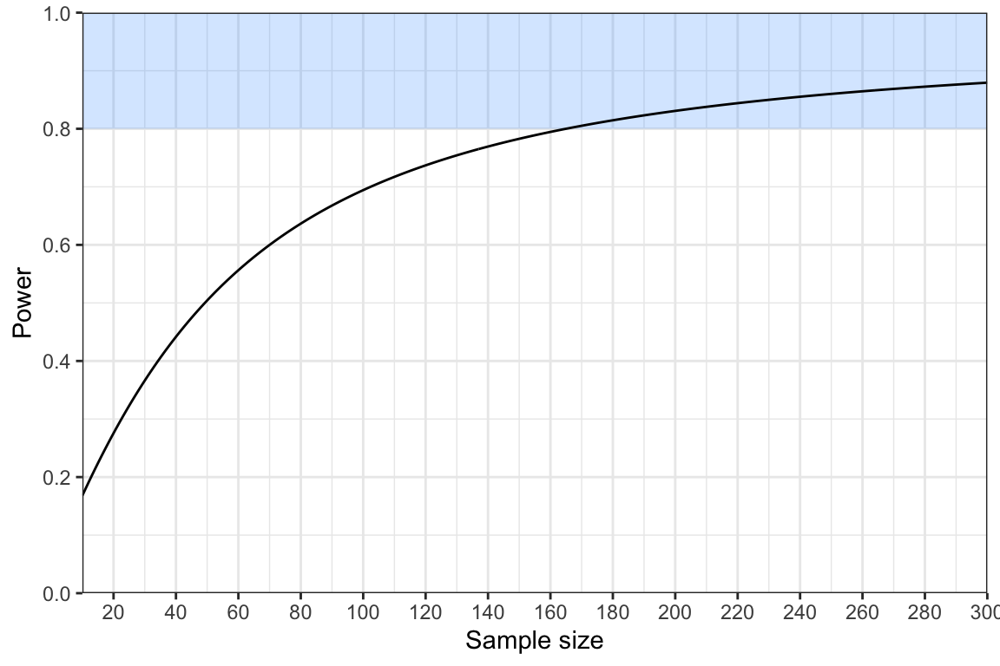
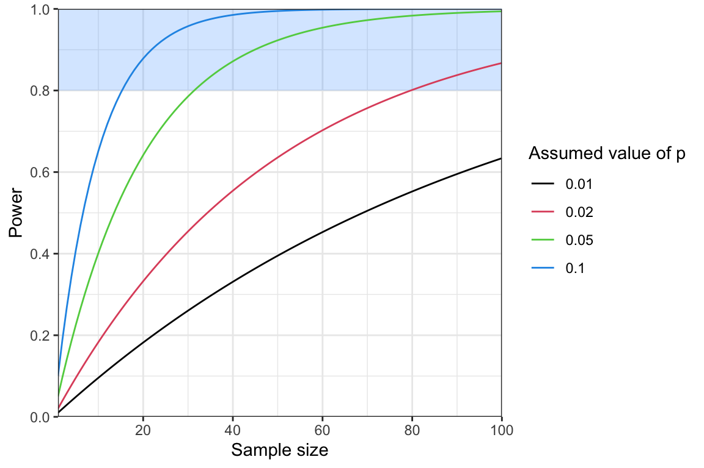

This activity focuses on hypothesis testing and power. After a short quiz, you will work through two examples; 1) detecting a change in prevalence over time, and 2) looking to detect rare variants. In this activity you will learn:
Some key definitions around null hypothesis testing.
How to use a test statistic to decide whether or not to reject a null hypothesis.
How to perform power analysis under two different statistical tests, and how to use this to select sample sizes.
How to interpret power curves.
Disclaimer: The scenarios in this document are entirely fictitious. While real place names are used, the data itself is simulated for teaching purposes only. It does not necessarily represent the real epidemiological situation.
Short quiz on hypothesis testing and power
Question: What is a null hypothesis?
Options:
A statement that there is a significant effect or difference between groups.
A prediction about the future outcome of an experiment.
A statement that there is no effect or no difference between groups, and any observed effect is due to chance. (correct)
A hypothesis that describes the expected relationship between two variables.
Question: Which of these is not a null hypothesis?
Options:
There is no difference in malaria prevalence between people who sleep under bed-nets and people who do not.
The presence of a genetic marker for drug resistance is independent of the region (e.g., East Africa vs. West Africa).
Elevation has no linear relationship with malaria risk.
Malaria incidence is twice as high in men as it is in women. (correct)
Question: A false-negative result is when…(this one takes some thinking)
Options:
You fail to reject the null hypothesis when it is actually false. (correct)
You fail to reject the null hypothesis when it is actually true.
You reject the null hypothesis when it is actually false.
You reject the null hypothesis when it is actually true.
Answer: This type of question is always tricky as the language is all quite similar. Remember that a “negative” result means we fail to reject the null hypothesis. We were looking for something interesting, we didn’t find it, so we stick with the null. This means we can narrow down the answer to A) or B). Now consider that the question was about a “false-negative”, meaning we came to the incorrect conclusion. This means the null hypothesis must have actually been false, and we made the wrong choice by failing to reject it. Therefore, the answer is A).
Question: The parameter \(\alpha\) is often referred to as…
Options:
The confidence level of a hypothesis test.
The significance level of a hypothesis test. (correct)
The power of a statistical test.
The probability of making a Type II error.
Question: The value of \(\alpha\) defines…
Options:
The sample size of our study.
The chance of getting a false-negative result (also known as a Type II error).
The strength of the effect we observe.
The chance of getting a false-positive result (also known as a Type I error). (correct)
Question: A statistical test that only examines effects in one direction, not both, is called…
Options:
A one-headed test.
A one-way street analysis.
A wild goose chase.
A one-tailed test.(correct)
Question: TRUE or FALSE, in statistical testing, we always compare our test statistic against the same distribution.
Options:
TRUE
FALSE (correct)
Question: You are running a study to test if the prevalence of a drug resistant mutation has changed over time. You will analyse your data using a z-test. The critical values for a two-tailed z-test at the significance level \(\alpha = 0.05\) are at \(\pm1.96\). You obtain a test statistic of -2.54. What should you do based on this result?
Options:
Reject the null hypothesis because the test statistic is less than zero.
Reject the null hypothesis because the test statistic exceeds the lower critical value. (correct)
Fail to reject the null hypothesis because the test statistic is negative.
Fail to reject the null hypothesis because the test statistic is less than the upper critical value.
Answer:. We should reject the null hypothesis because we exceed the critical values. In this example, we have two critical values, one negative value at -1.96 and one positive value at +1.96. Anything inside this region (greater than -1/96 but less than +1.96) is reasonably likely under the null hypothesis, but values outside this region are unlikely. Our value was outside this region, meaning we should reject the null hypothesis.
Testing for changes in drug resistance prevalence over time
You are concerned that the prevalence of antimalarial resistance might be increasing in your region. You have data on the prevalence of pfmdr1 N86Y mutations from a cross-sectional survey that took place three years ago. You plan to repeat the survey to establish if there has been a change in the prevalence of N86Y mutations over this time. The statistical test you plan to use is a z-test for proportions.
Question: Which of these is the null hypothesis under this test?
Options:
The prevalence of pfmdr1 N86Y mutations has increased over the past three years.
The prevalence of pfmdr1 N86Y mutations has decreased over the past three years.
The prevalence of pfmdr1 N86Y mutations is the same now as it was three years ago. correct
The prevalence of pfmdr1 N86Y mutations differs between now and three years ago.
The study three years ago obtained genetic data from 80 samples, of which 12 were identified as carrying the N86Y mutation. We can estimate the prevalence as: \[
p_1 = \frac{12}{80} = 0.15
\] As part of our power analysis, we have to assume a known value of the prevalence at the present day. We will be pessimistic and assume that the prevalence has doubled over the three years to \(p_2=0.30\).
We know that the sample size was \(n_1=80\) for the first study. For the present study we plan to use a larger sample size of \(n_2=300\).
Given all of these values, we can calculate the expected value for our test statistic using the following formula: \[
\mu_{\text{alt}} = \frac{|p_1 - p_2|}{\sqrt{\frac{p_1(1-p_1)}{n_1} + \frac{p_2(1-p_2)}{n_2}}}
\] Note that the vertical lines around \(|p_1 - p2|\) mean we should take the absolute value of the difference in prevalence. This ensures that \(\mu_{\text{alt}}\) is always positive.
Complete the following R code to calculate the value of \(\mu_{\text{alt}}\):
# input parametersp1 <-0.15p2 <-0.3n1 <-80n2 <-300# calculate absolute value of difference in prevalencep_diff <-abs(p1 - p2)# calculate the standard errorSE <-sqrt(p1*(1- p1) / n1 + p2*(1- p2) / n2)# calculate mu_altmu_alt <- p_diff / SEprint(mu_alt)
[1] 3.131975
We can use the value of \(\mu_{\text{alt}}\) to tell us our power. The formula for power under the z-test is:
In this formula, \(\phi(x)\) refers to the area under the curve of a standard normal distribution from \(-\infty\) up to the point \(x\). There is no simple way of calculating this value, but we can obtain it easily in R using the pnorm() function. As in previous activities, the value \(z_{1 - \alpha/2}\) refers to the critical value of the normal distribution at a significance level \(\alpha\) (two-tailed), which is approximately equal to 1.96.
Complete the following R code to calculate the power under the planned study design:
From this calculation, we can see that our power is around 88%.
Question: A power of 88% means…
Options:
There is an 88% chance that the study will be successful.
There is an 88% difference in prevalence between the time points.
There is an 88% chance that the alternative hypothesis is true.
Assuming the alternative hypothesis is true, there is an 88% chance that we will correctly reject the null hypothesis. correct
We normally aim for 80% power, meaning this study design is adequately powered. In fact, we could argue that this study is slightly over-powered, meaning we could get away with using fewer samples and still be good enough.
The following power curve shows us the power as a function of the sample size (\(n_2\)). The region with 80% power or above is shaded in blue.

Question: From this graph, what sample size is needed to achieve a power of 80%?
Options:
140
165 correct
190
285
Only 165 samples are needed for us to obtain 80% power. From the power curve, we can see that we reach diminishing returns as we continue increasing the sample size, meaning there is little benefit to continually driving up the sample size. The conclusion of our power analysis is that our initial plan to sequence 300 samples was excessive, and we can get away with sequencing far fewer samples. This is likely to lead to cost savings, and may allow us to redirect these resources elsewhere.
Detecting rare variants
You are planning a study to look for the presence of validated pfk13 mutations. You are not interested in estimating the prevalence of mutations, rather you want to know if any of these mutations are present in your population. You will test people for malaria as they present to a local health facility, and a subset of dried blood spots from malaria-positive patients will be sent away for sequencing. You only have the resources to sequence 100 samples, and you want to know if it is worth conducting a study with such a small sample size.
This type of presence-absence study can be framed as a hypothesis test. The null hypothesis is that there are no validated mutations present in the population, i.e. the prevalence of these mutations is zero. Even a single observation of a mutation would disprove this null hypothesis, therefore - unlike most statistical tests (e.g. the z-test above) - there is no test statistic to calculate here. Instead, we simply reject the null hypothesis if we see a single validated mutant, otherwise we fail to reject the null hypothesis.
We start by assuming a known prevalence, \(p\), for the validated mutations. We also need to define our sample size, \(n\). Samples are assumed to be drawn at random from the population.
The probability that a single sample is negative for mutants is \(1-p\). The probability that all \(n\) samples are negative is \((1 - p)^n\). The probability of seeing at least one mutant is one minus the probability of seeing no mutants. The probability of seeing at least one mutant is also defined as our power under this test, therefore:
\[
P_{ow} = 1 - (1 - p)^n
\]
Complete the following R code to calculate the power under an assumed prevalence of \(p=0.05\) and a sample size of \(n=100\):
We have extremely high power under this example, which is reassuring.
Question: What is the power if we assume the prevalence of validated mutants is only 1% in the population?
Options:
51%
63% correct
76%
84%
The following power curves show power as a function of sample size for a range of different value of \(p\):

Question: From these power curves, what sample size is needed to achieve 80% power if we assume the true prevalence of mutants in the population is 2%?
Options:
40
60
80 correct
90
Question: What about if we assume the prevalence is 1%?
Options:
16
32
80
More than 100, meaning we cannot achieve 80% power within our resource limits.correct
Our original question was whether it was worth conducting this study given our tight resource constraints of at most 100 samples sequenced. What the graph shows us is that whether or not it is worth running this study depends on what we are happy to assume about the prevalence of mutations in the population. If we are very worried about missing mutations present at only 1% in the population, then it is not worth running this study (unless we have some other indirect benefits of the sequencing) as we will be under-powered. On the other hand, if we would not be very concerned about mutations at 1% prevalence, and we are much more concerned about them reaching 5% prevalence or higher, then we would achieve adequate power with as few as 32 samples. This is the point at which statistical information needs to be combined with clinical and programmatic information to make an informed decision about the most appropriate course of action.
Bonus questions
A study was conducted with the aim of detecting rare pfk13 variants. A sample size of 32 was used, as this was determined to be sufficient based on statistical arguments. However, during sequencing it also became clear that pfmdr1 mutations could be sequenced from the same samples at little extra cost. 10 out of the 32 samples were found to carry the pfmdr1 N86Y mutation, giving a prevalence of 32%. This was surprising - only last year a study had found a prevalence of 20% in a sample of 150 people. This raised the question of whether the prevalence of N86Y mutations had increased significantly over this period.
The research team carried out a z-test for proportions to see if there was a statistically significant increase between the two studies. Here are the inputs to their test:
\[
\begin{align}
\hat{p}_1 &= \frac{30}{150} = 0.20 \\
\hat{p}_2 &= \frac{10}{32} = 0.31 \\
\hat{p} &= \frac{30 + 10}{150 + 32} = 0.22 \\
n_1 &= 150 \\
n_2 &= 32
\end{align}
\] The test statistic was calculated from these values as follows: \[
Z = \frac{|\hat{p}_1 - \hat{p}_2|}{\sqrt{\hat{p}(1 - \hat{p})\left(\frac{1}{n_1} + \frac{1}{n_2}\right)}}
\]
This gives the value \(Z = 1.40\). The researchers compared this value against the critical values of \(\pm1.96\) and found that this was non-significant. Therefore, they did not have evidence to reject the null hypothesis that prevalence stayed the same over this time period. They took this as reassurance that prevalence of N86Y mutations is not increasing in the region.
However…
Question: Were they right to come to this conclusion? What was their power to detect a a change in prevalence from 20% to 30%? What about a change from 20% to 40%? How does this “retrospective” power analysis change how we interpret the non-significant finding from the z-test?
Answer:
When we conduct power analysis under the z-test, we find that power to detect a change from 20% to 30% was only around 21%. Similarly, power to detect a change from 20% to 40% was still only 58%. This falls well below the usual 80% power threshold. With this low power there would be a very good chance of getting a non-significant result even if prevalence had doubled!
The problem here is that the sample size of 32 is too small, leading to an underpowered study. This happened because the study design was not powered to answer questions about the change in prevalence of N86Y mutations, rather it was designed and powered to answer a question about presence/absence of rare pfk13 variants.
The lack of power means we shouldn’t read too much into the non-significant finding. There could have been major changes in the prevalence of N86Y mutations over the year, but we would have very little chance of rejecting the null hypothesis due to our lack of power.
Question: How could this low power have been avoided?
Answer: If our plan was to look for changes in prevalence of N86Y mutations alongside looking for rare pfk13 mutants then this should have been accounted for at the design stage. A power analysis should have been conducted that took into account both endpoints. This would have resulted in a larger sample size that was sufficient to answer both questions.